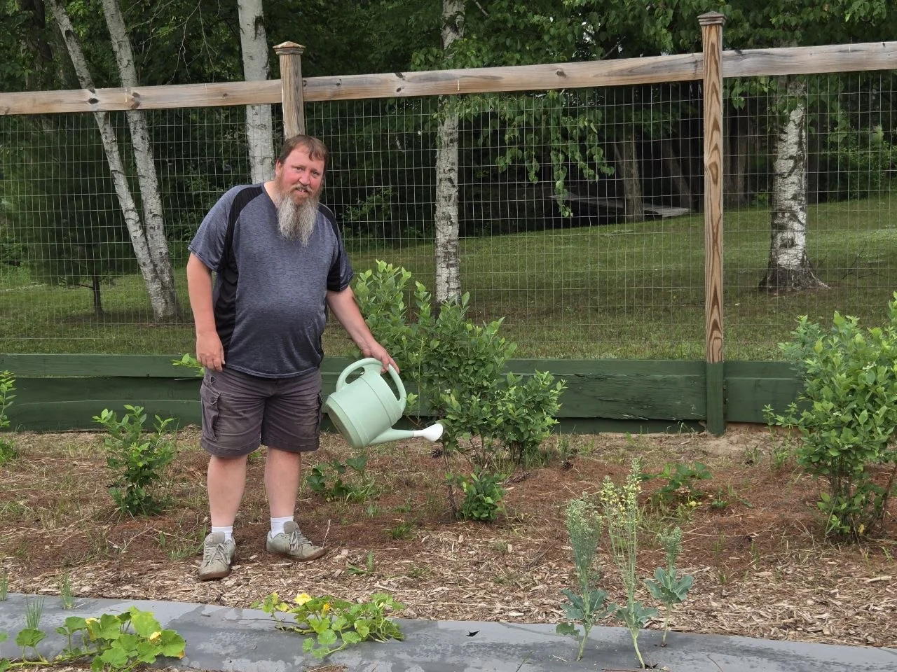

Meet Jeff
Jeff is the heart behind Quiet Backyard Living. He loves nature, gardening, peaceful outdoor spaces, and finding simple ways to make a backyard feel more welcoming to birds, pollinators, and friendly little wildlife.
But this site is not just about pretty backyard pictures or tidy finished projects. It is also about setbacks, stress, trying again, and finding a little peace in the middle of real life. Some seasons go badly. Some builds fight back. Some ideas only matter because they came after something failed.
He is building this site from real life, real projects, real planting, and real time spent outdoors, both at home and at the cabin. The goal is to share ideas that feel useful, honest, and enjoyable, not fussy or overcomplicated, and to leave room for the part most polished sites skip, what it looked like to get knocked down and get back up.